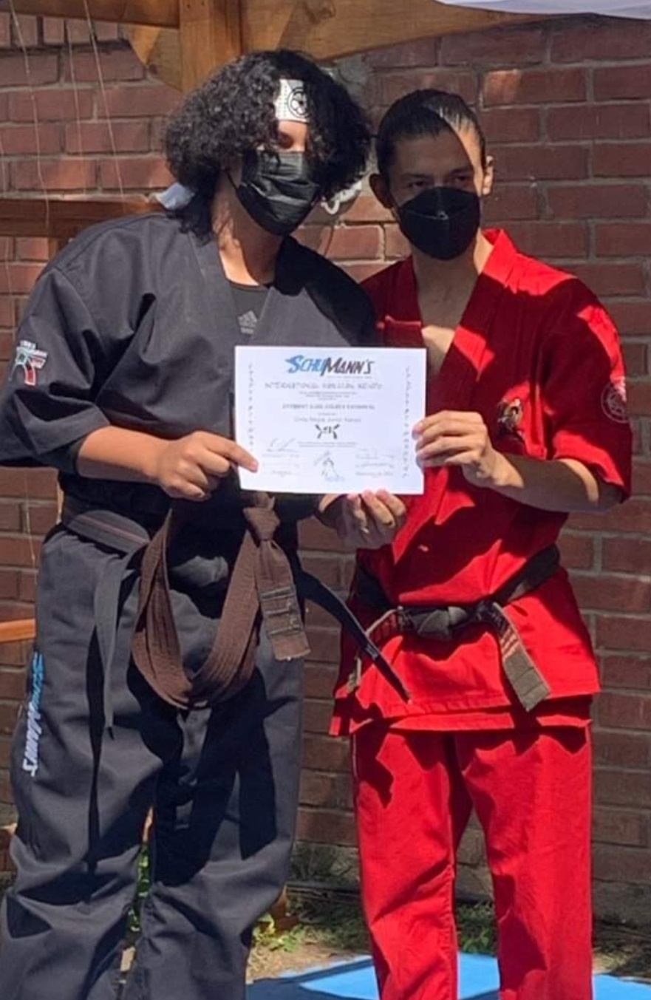
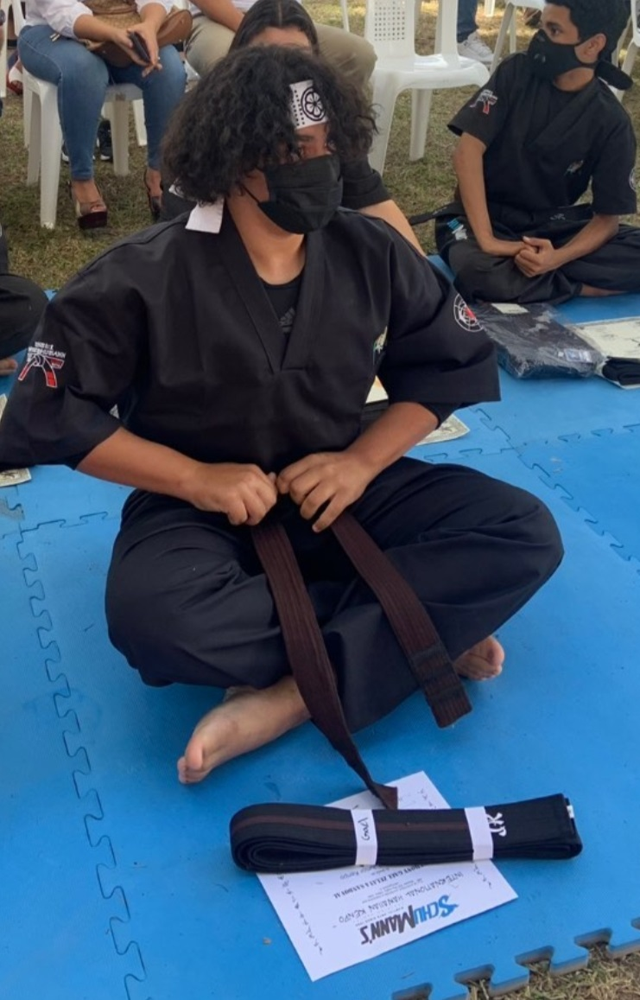
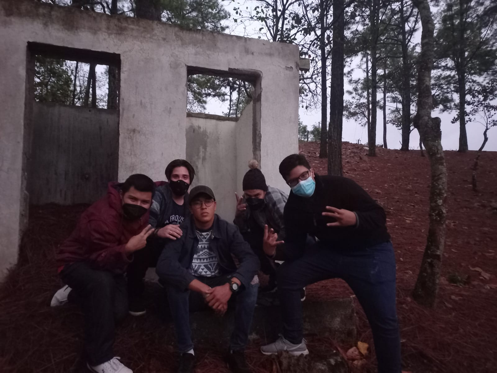
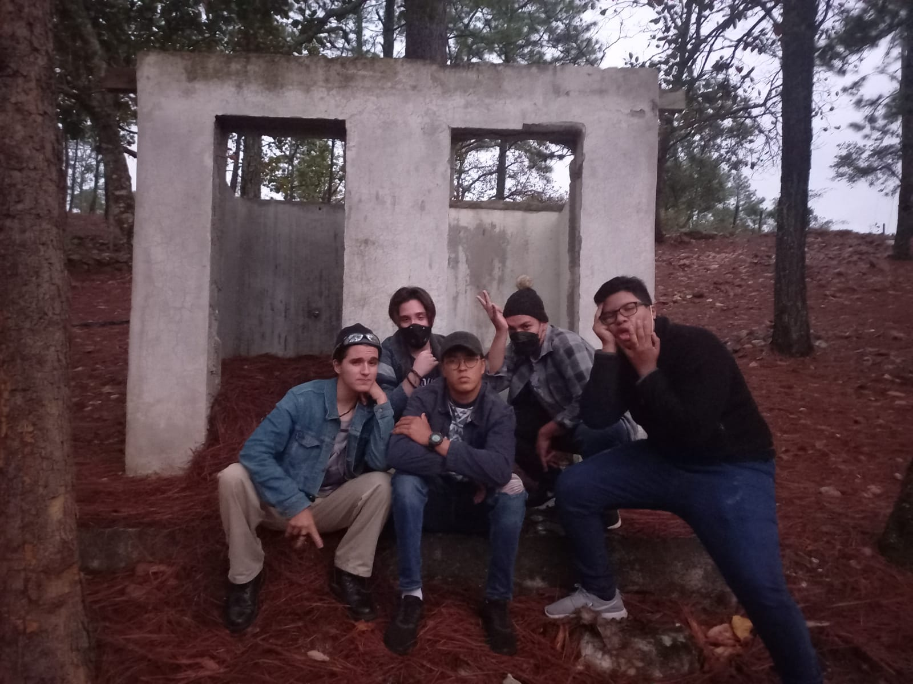

Hablar de pasiones es algo difícil, ya que casi, todo lo que se disfruta y lo que se hace con sentimiento así que con eso claro empiezo. tengo que hablar primero sobre el karate, como ya lo había dicho es uno de los pilares y fundamentos de mí vida, ha venido para ayudarme desde los 11 años. Desde ese momento he crecido tanto en mente como cuerpo. El karate más que algo que se aprende es un estilo de vida al cual implicarse totalmente a todas las enseñanzas que recibo.
 Otra de mis grandes pasiones es el escribir, como lo dije alguna vez, me gusta escribir y componer música de manera amateur y por diversión. Eso proviene desde pequeño ya que tome algunas clases de poesía y escritura lamentablemente no tengo ni imagenes u videos de esos momentos. La escritura es algo que me sirve como desahogo y en estos tiempos las ideas de canciones fluyen casi como un río, en algún momento tengo pensado producir todas esas canciones con mis amigos. Verdaderamente quiero hacerlo por diversióny ver que sucede, lo único que me preocupa es hacerlo de manera "profesional" y estar con ellos en el proceso.
 Para finalizar simplemente quiero agregar que la última gran pasión que tengo, y es compartir con mis amigos, ellos son una pieza muy importante en mí vida han estado ahí desde siempre y espero siempre esten relacionados en mí vida.